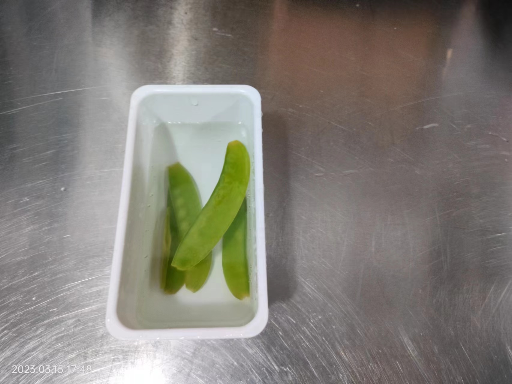
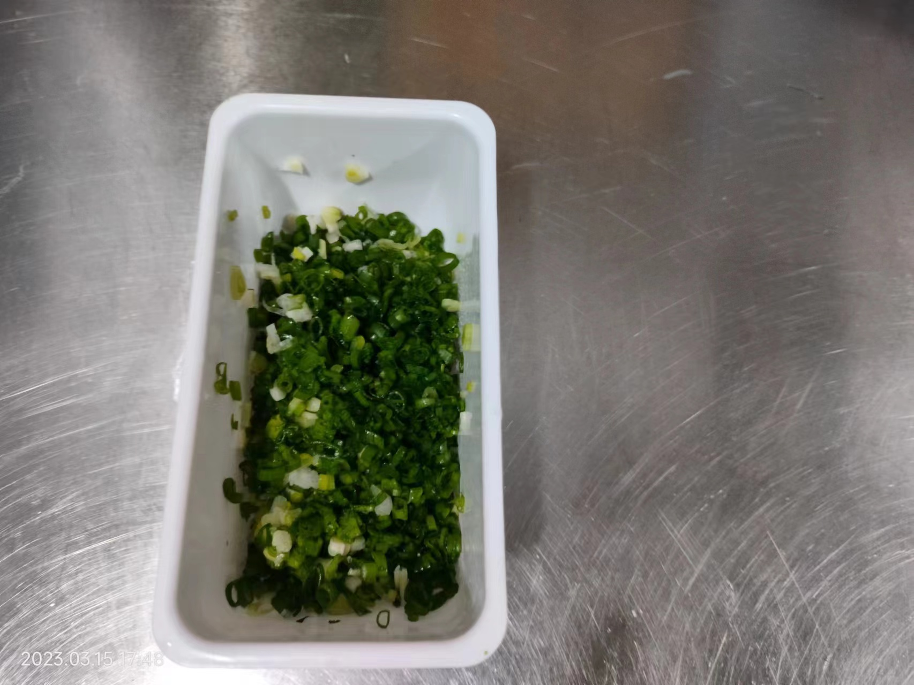
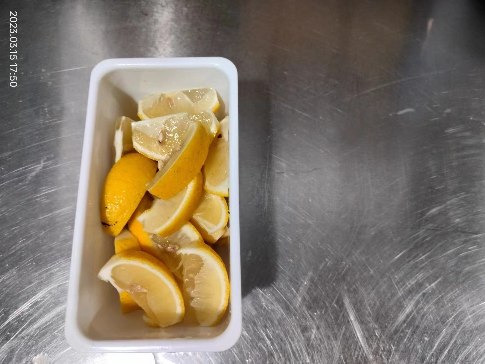
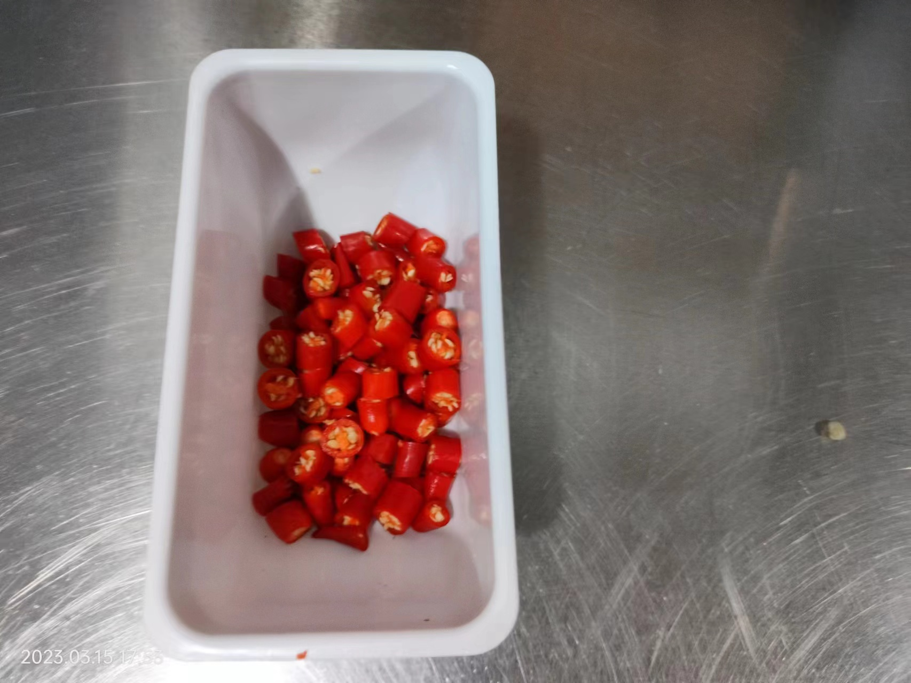
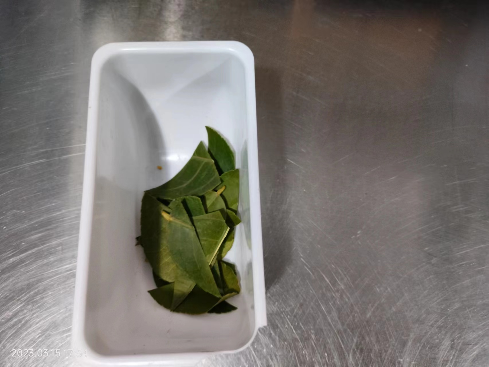
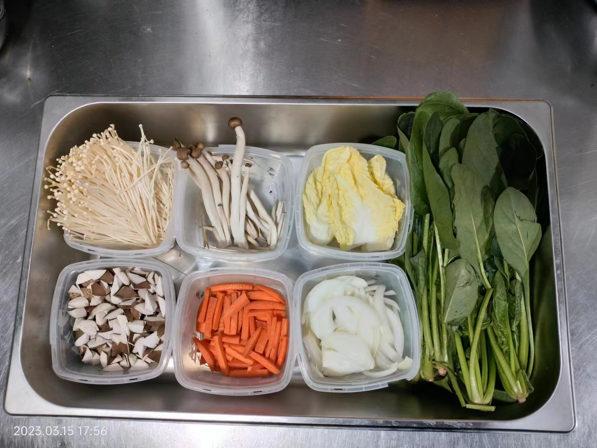

水开放入荷兰豆煮1分钟，过凉备用
切成2毫米细圈，节假日可多备一些
每半个切5刀出6块，去掉中间的白筋

| 名称 | 处理方法 | 参考图片 |
|---|---|---|
| 荷兰豆 | 荷兰豆先摘去筋，烧水放盐5g， 水开放入荷兰豆煮1分钟，过凉备用 |
 |
| 小葱 | 去掉葱根、黄叶，洗净， 切成2毫米细圈，节假日可多备一些 |
 |
| 黄柠檬 | 准备3个黄柠檬，切掉两端，一分为二， 每半个切5刀出6块，去掉中间的白筋 |
 |
| 青柠檬 | 准备1个青柠檬，去掉两端，切成2毫米薄片 | |
| 小米椒圈 | 准备10个小米椒，去梗洗净，切成5毫米圈 |  |
| 柠檬叶 | 洗净，切成三角形，少切勤备 |  |
| 名称 | 处理方法 | 参考图片 |
|---|---|---|
| 菠菜 娃娃菜心 金针菇 蟹味菇 洋葱条 胡萝卜条 香菇碎 |
清洗干净，分装，便于取用 |  |